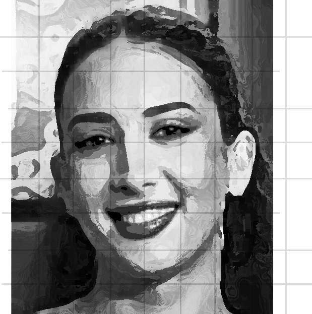

/ /
Naïka

NOM
Naïka Richard

LIEU DE NAISSANCE
Haïti

ORIGINE
Franco-haïtienne
Métier
Chanteuse · Actrice
Talents
Kompa
Boléro
Musique haïtienne
Naïka Richard est l'une des voix les plus distinctives et aimées de la scène musicale haïtienne. Artiste complète — chanteuse et actrice — elle incarne la fierté culturelle haïtienne avec élégance et authenticité.
Débuts
Révélée sur la scène musicale haïtienne par sa voix unique, alliant douceur et puissance dans les rythmes kompa et boléro.
Scène
Se produit en Haïti et dans toute la diaspora — New York, Montréal, Paris — portant haut la musique haïtienne traditionnelle.
Cinéma
Étend son talent au cinéma haïtien, s'imposant comme une figure incontournable de la culture populaire en Haïti.
Héritage
Ses interprétations de classiques haïtiens comme Haïti chérie résonnent comme des hymnes à la mémoire collective du pays.
Racines
Profondément ancrée dans la culture haïtienne, Naïka est une gardienne des traditions musicales du pays qu'elle transmet à chaque génération.
Ambassadrice
À travers sa carrière, elle rayonne depuis Haïti et rappelle que l'île possède un patrimoine artistique d'une richesse incomparable.
Gratitude à Ralph ALLEN